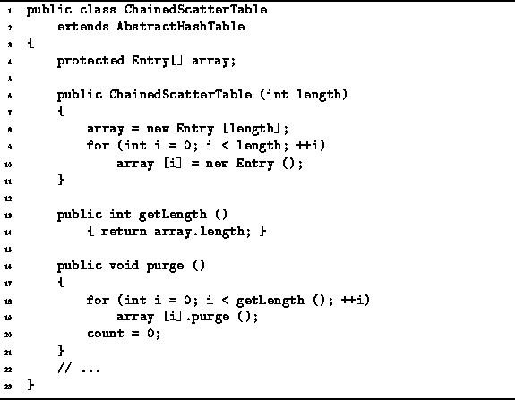

Data Structures and Algorithms
with Object-Oriented Design Patterns in Java
Data Structures and Algorithms
with Object-Oriented Design Patterns in Java
Program  defines the
constructor, getLength, and purge methods of
the ChainedScatterTable class.
The constructor takes a single argument
which specifies the size of scatter table desired.
It creates an array of the desired length
and initializes each element of the array by assigning to it
an new Entry instance.
Consequently, the running time for the ChainedScatterTable
constructor is O(M) where M is the size of the scatter table.
defines the
constructor, getLength, and purge methods of
the ChainedScatterTable class.
The constructor takes a single argument
which specifies the size of scatter table desired.
It creates an array of the desired length
and initializes each element of the array by assigning to it
an new Entry instance.
Consequently, the running time for the ChainedScatterTable
constructor is O(M) where M is the size of the scatter table.

Program: ChainedScatterTable class constructor, getLength, and purge methods.
The getLength method simply returns the length of the array field. Clearly, its running time is O(1).
The purge method empties the scatter table
by invoking the purge method on each Entry object
in the array.
The purge method for the Entry class is given
in Program .
Notice that an entry can be purged in constant time.
Therefore, the time required to purge the scatter table is O(M),
where M is the length of the table.
 Copyright © 1998 by Bruno R. Preiss, P.Eng. All rights reserved.
Copyright © 1998 by Bruno R. Preiss, P.Eng. All rights reserved.